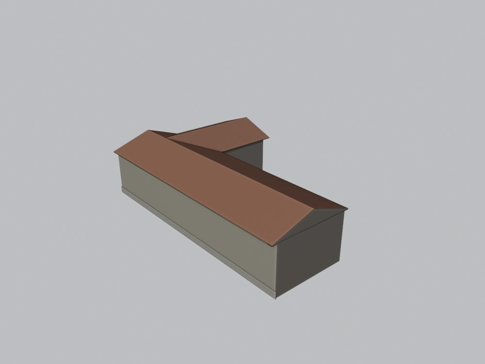
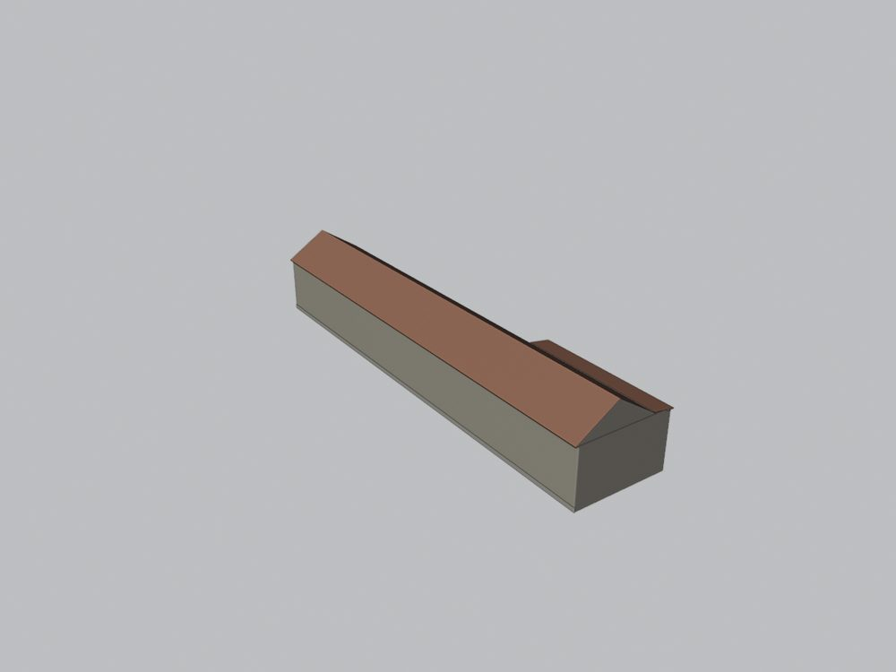
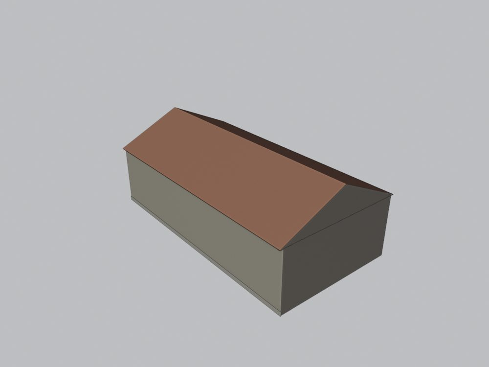
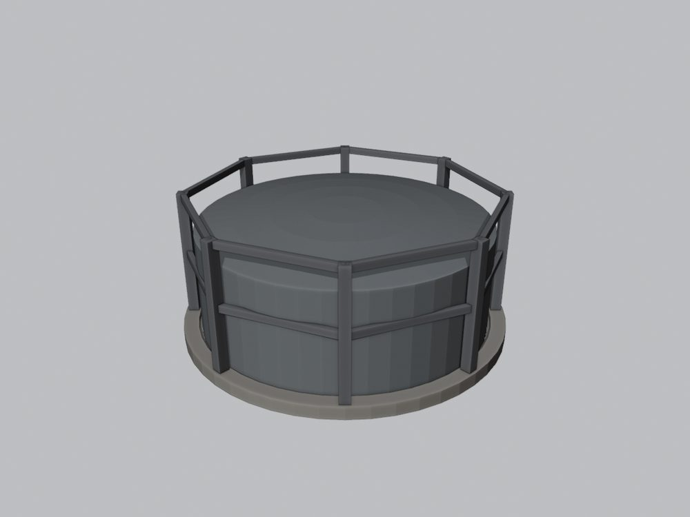
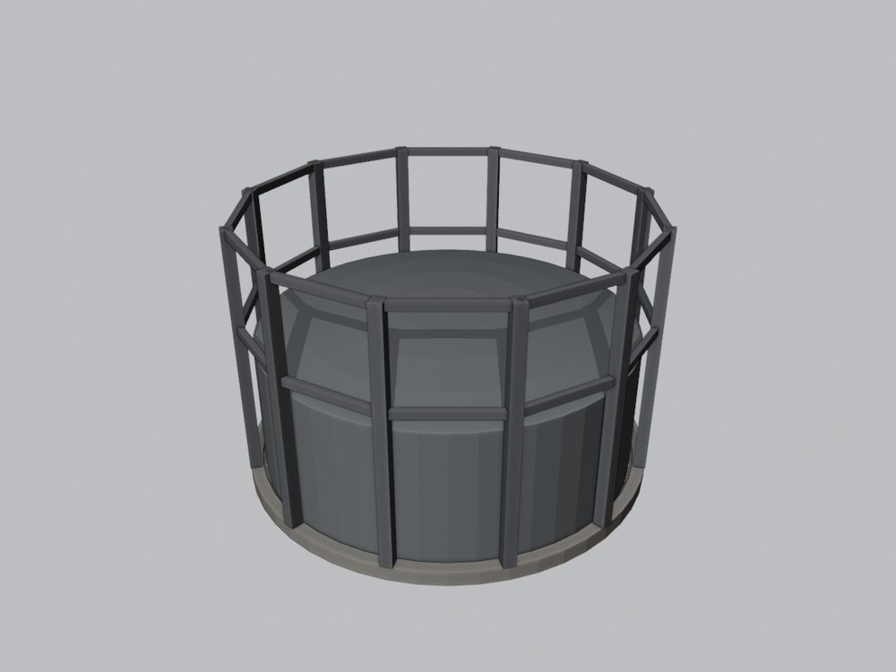
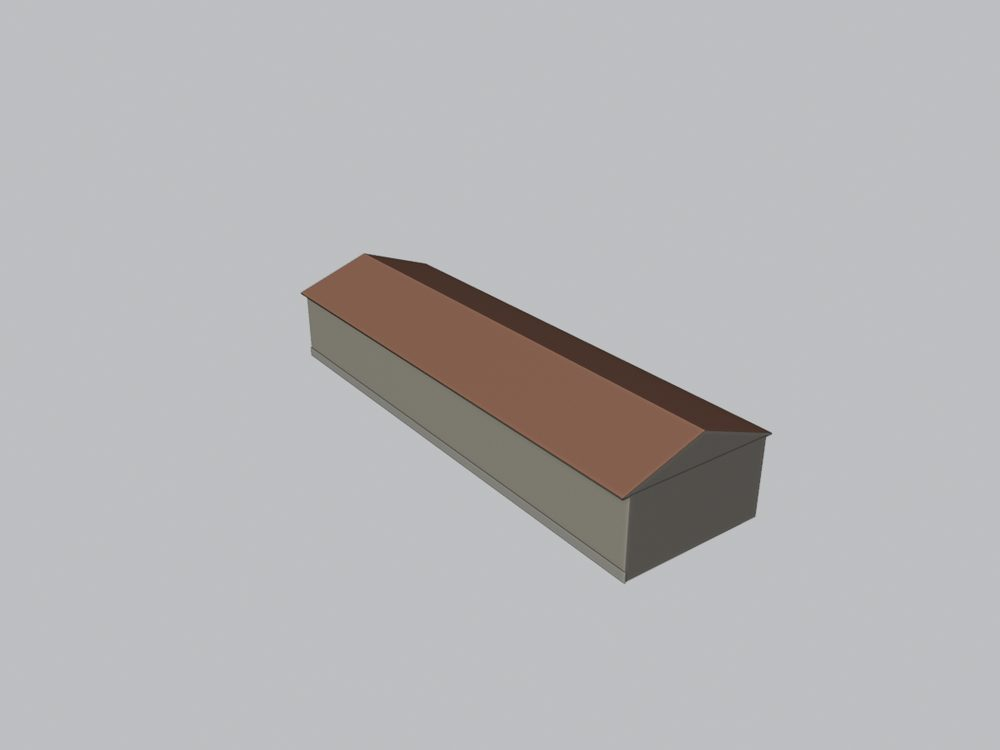

Co kde stálo
Poloha všech domů pochází z GIS vrstvy projektu, která je vektorizací historického plánu města Mostu z roku 1938. Ulice v ní vede jako Seligerova (v roce 1964 U hřiště) s 36 budovami: 28 z nich mají číslo popisné (27 různých čísel, čp. 523 má dvě budovy), 8 čísla nemají (dvůr paláce SHD a areál bývalé plynárny). Kliknutím na zelený nebo oranžový dům v mapě otevřete jeho stránku.
Čísla v mapě jsou podle pramenů, ne podle popisků GIS: budova 635 je 574 a budova 634 je 630 (v GIS mají popisky prohozené, viz Rozpory). Dílny 413 a a 413 b jsou hypotéza identity na budovách GIS bez čísla. Budovy bez čísla popisného (GIS 1526–1531 v areálu plynárny a GIS 1638) jsou označené „GIS“ a modelované jako hypotézy.
Úseky ulice
- S1 · jižní strana VSV ramene: 626, 625, 630, 574, 772
- S2 · severozápadní strana VSV ramene: 823, 831, 653, 659, 666, 673, 671
- S3 · bývalá plynárna: 523 a, GIS 1530, 523 b, GIS 1529, GIS 1531, GIS 1527, GIS 1526
- S4 · JZ rameno od Husova náměstí: 1733, 413 a, 413 b, 1313, 410
- S5 · rameno k nám. Dvouletky: 415, 475, 416, 439, 417
- S6 · domy čelem k nám. Dvouletky: 586, 1230, 1186, 1188, 1178, 1192, GIS 1638
Databázová oblast „U hřiště“ a co modelováno není
Oblast U hřiště v databázi Libuše obsahuje 35 struktur. Dvě zbořené dvorní stavby nemají v GIS půdorys, a proto se nemodelují (blocked):
| Čp. | Proč není modelováno | Přílohy |
|---|---|---|
| 627 | dvorní stavba hostince „Zur Linde“ (772), na skice cp_772_001 vyznačená jako zbořená; v databázi jen plány, v GIS bez půdorysu | 8 |
| 742 | dvorní stavba za 625 a 630, na skicách KSPPOP vyznačená jako zbořená; jeden plán, v GIS bez půdorysu | 1 |
Dalších pět struktur obsahuje jen pohlednice nebo leží podle GIS v jiných ulicích; jejich přílohy jsme načetli a prohlédli, modelovány nejsou:
| Čp. | Poznámka | Ulice podle GIS | Přílohy |
|---|---|---|---|
| 452 | jen pohlednice (sdílené panoramy), není domem této ulice | v GIS není | 2 |
| 459 | jen pohlednice (sdílená), není domem této ulice | v GIS není | 1 |
| 540 | podle GIS v ulicích Gassmanova / Nádražní, jiná ulice | Mánesova (1938 Gassmanova), Nádražní | 2 |
| 552 | pohlednice Václavského a Husova náměstí, mimo rozsah ulice | v GIS není | 2 |
| 740 | podle GIS v ulicích Nádražní / Okružní, jiná ulice | Nádražní, Okružní | 2 |
Odkud jsou prameny
Dvě fotografické kampaně
Ulici zachycují dvě kampaně fotodokumentace: „Komplet: Starý Most“ (karty MNV s datem 28. 11. 1967, domy ještě stojí) a fotodokumentace KSPPOP Ústí nad Labem z 60.–70. let (karty s razítkem a skici parcel s čísly sousedních domů; část domů je na nich už zbořena a v prolukách stojí garáže). Cílová epocha modelu jsou 60. léta: pro každý dům používáme snímek z roku 1967 nebo z KSPPOP, na kterém dům ještě stojí. Ručně psané texty karet a skici určují, co snímek ukazuje a kdo jsou sousedé.
Stavební plány 1871–1940
K většině domů existují stavební plány z let 1871–1940. Pro jižní řadu jsou klíčové pohledy „Ansicht“ 1 : 100 z roku 1931 (starý stav a renovace fasády) pro Brüxer Kohlen-Bergbau-Gesellschaft, které kreslí domy 574, 630, 625 a 626 vedle sebe a dávají jejich výšky. Projekt ale není realizace: u domů 625, 659, 671, 673, 772, 410 a 1733 se plány a fotografie liší a model sleduje fotografii (viz Rozpory). Míry na starých listech v sázích převádíme vídeňským sáhem 1,8965 m.
Databáze Libuše projektu MOST
Seznamy příloh jsme načetli živě 25. 10. 2026, pouze pro čtení (0 zápisů). Oblast U hřiště má 35 struktur a 516 příloh (437 různých souborů podle SHA-256): 130 plánů a výkresů, 113 fotografií, 101 archivních karet, 21 pohlednic, 2 kolorované odvozeniny a 149 příloh bez tagu. Netagované přílohy jsou nízkorozlišené kopie (1920 × 1080, černé okraje) z dřívější duplicitní oblasti, která v databázi živě už neexistuje; u domů 417, 1230, 1186, 1188, 1178 a 1192 jsou jediným obrazovým pramenem fasády. Proti staršímu snímku databáze z 11. září zmizelo 33 struktur s pohlednicemi a přibyla struktura 410. Ze sousední oblasti Náměstí Dvouletky jsme načetli struktury 596, 740 a 1193 (soused domu 1192). Každou přílohu jsme otevřeli; náhledy jsou na stránkách domů a seznam s kontrolními součty SHA-256 je ve zprávě.
Odvozeniny
Kolorované snímky v databázi (u čp. 523) jsou rekonstrukce, ne prameny. O tvaru, otvorech a nápisech rozhoduje původní černobílá fotografie.
GIS a terén
Polohy, natočení a šířky průčelí jsou z GIS vrstvy (vektorizace plánu 1938, místní souřadnice). Výšky budov v GIS jsou jen náhodný zástupný údaj: výšky domů odhadujeme z plánů a rektifikovaných fotografií. Terén je zatím plochý (výška ulice z = 0 u všech domů), protože jsme pro ulici neotevřeli žádný historický výškopis; je to provizorní hypotéza.
Jak vznikla geometrie
- Rešerše plánů. Nejdříve jsme prohledali databázi stavebních plánů: všech 516 příloh oblasti a 13 příloh sousední oblasti jsme otevřeli na kontaktních listech a listy použité pro geometrii četli v plném rozlišení (titulek, datum, měřítko, uliční nebo dvorní objekt, sousedé). Plány se našly u všech položek dávky.
- Identita a pořadí domů. Skici parcel KSPPOP s čísly sousedů a popsané fotografie určují, který dům je který. Tak vyšlo najevo, že GIS má u domů 574 a 630 prohozené popisky a že dílny 413 nemají v GIS vlastní budovu.
- Fasáda jen z fotografie s domem v rámečku. Na každém použitém snímku je dům v červeném rámečku a každý otvor má ID (například G pro okna přízemí, U pro okna patra, D pro dveře, DW pro okna vikýřů). Počty otvorů z rámečků kontroluje brána proti plánu modelu; rámečky jsou na stránce každého domu.
- Rektifikace a měřítko. Fotografie průčelí jsou rektifikovány na šířku průčelí z GIS. Svislé měřítko dávají plány (řezy a pohledy z let 1881 až 1932), jinde odhad podle dveří a podlaží. Kde se projekt liší od realizace, model sleduje fotografii.
- Střecha. Silueta střechy je z fotografie, výšky z řezu nebo pohledu; střecha hotového modelu se změří ze sítě a porovná s pramenem.
- Stavba v Blenderu. Parametrický builder bez okna (
build_house_20261025.py, odvozený z builderu Rudolfovy a Kulové) vyrobí zgeometry_plan.jsonBLEND a GLB. Otvory jsou skutečné niky, vikýře otevírají krytinu, materiály jsou jen ID pro pozdější textury. - Kontrola. Brána geometrie (prosvítání podkroví paprsky, nekryté zdivo, střecha nad prázdnem, UV, síť, počty otvorů) a vizuální kontrola: pohledy s materiály a bez barev (čtyři strany, čtyři rohy shora, dva podhledy u okapu, shora), detaily otvorů a záznam kontroly. Dům se do ulice umístí až po prošlé bráně a prohlédnuté sadě.
- Sestava ulice. Registr
street_layout_gis.jsondrží polohu, natočení a revizi každého domu (rámec X = východ, Y = sever); domy, které ještě nejsou hotové, zastupují v sestavě šedé bloky z GIS.
Pracovní složka: F:\MOST\output\u_hriste_street_claude_2026-10-25\ (domy, kontroly, registr poloh; prameny jen ke čtení).
Domy ulice
Domy jsou seřazené po úsecích ulice. U domů se štítkem je část podoby nebo identita hypotézou; štítek je stejný na stránce domu, v tabulce, v anglické verzi i v okně 3D prohlížeče.
S1 · jižní strana VSV ramene

řadový patrový dům v ohybu ulice
28 příloh v databázi · revize r2
zatím bez textur

řadový patrový dům
26 příloh v databázi · revize r2
zatím bez textur

patrový dům s obloukovým průjezdem a třemi vikýři
14 příloh v databázi · revize r3
zatím bez textur

patrový dům se třemi vikýři
21 příloh v databázi · revize r3
zatím bez textur

bývalý hostinec „Zur Linde“ na konci řady
20 příloh v databázi · revize r1
zatím bez textur
S2 · severozápadní strana VSV ramene

nárožní dům dvojdomu 823 | 831
12 příloh v databázi · revize r2
zatím bez textur

pravá polovina dvojdomu 823 | 831
8 příloh v databázi · revize r1
zatím bez textur

dům s nikou se sochou a nastaveným uličním štítem
12 příloh v databázi · revize r4
zatím bez textur

patrový dům podle plánu z roku 1882
9 příloh v databázi · revize r3
zatím bez textur

nízký patrový dům
18 příloh v databázi · revize r1
zatím bez textur

patrový dům s modernizovanou fasádou
8 příloh v databázi · revize r1
zatím bez textur

dvoupatrový dům na konci řady
25 příloh v databázi · revize r2
zatím bez textur
S3 · bývalá plynárna

Jen část domu je doložena fotografií; zbytek je odvozen z plánu nebo ze sousedního domu.
budova bývalé plynárny podél ulice u 772
47 příloh v databázi · revize r2
bez textur (částečně hypotéza – jen prosté materiály)

Malá budova bez čísla popisného u vjezdu do bývalé plynárny podle GIS plánu 1938, pracovně vrátnice. Fotografie KSPPOP ukazuje bok vrátnice, ale její přiřazení k této budově GIS ani orientace nejsou jisté. Výška a střecha jsou odhad, otvory nemodelovány.
malá budova u vjezdu do plynárny (pracovně vrátnice)
0 příloh v databázi · revize r3
bez textur (částečně hypotéza – jen prosté materiály)

Jen část domu je doložena fotografií; zbytek je odvozen z plánu nebo ze sousedního domu.
dlouhá přízemní budova bývalé plynárny
47 příloh v databázi · revize r2
bez textur (částečně hypotéza – jen prosté materiály)

Budova bez čísla popisného v areálu bývalé plynárny jen podle GIS plánu 1938; fotografie ani plán k ní nebyly nalezeny. Plynárna byla po válce zbořena, v 60. letech tu budova pravděpodobně nestála. Výška a střecha jsou odhad, otvory nemodelovány.
dlouhá provozní budova plynárny podél ulice
0 příloh v databázi · revize r1
bez textur (částečně hypotéza – jen prosté materiály)

Budova bez čísla popisného v areálu bývalé plynárny jen podle GIS plánu 1938; fotografie ani plán k ní nebyly nalezeny. Plynárna byla po válce zbořena, v 60. letech tu budova pravděpodobně nestála. Výška a střecha jsou odhad, otvory nemodelovány.
provozní budova ve dvoře plynárny
0 příloh v databázi · revize r1
bez textur (částečně hypotéza – jen prosté materiály)

Plynojem bývalé plynárny podle GIS plánu 1938 a stavebního plánu. Podle karty KSPPOP byla plynárna za války zříceninou a potom zbořena – v 60. letech tu plynojem pravděpodobně už nestál. Poloha zvonu, výška a vodicí konstrukce jsou odhad.
plynojem 800 m³ (1872)
0 příloh v databázi · revize r1
bez textur (částečně hypotéza – jen prosté materiály)

Plynojem bývalé plynárny podle GIS plánu 1938 a stavebního plánu. Podle karty KSPPOP byla plynárna za války zříceninou a potom zbořena – v 60. letech tu plynojem pravděpodobně už nestál. Poloha zvonu, výška a vodicí konstrukce jsou odhad.
plynojem 2150 m³ (projekt 1903)
0 příloh v databázi · revize r1
bez textur (částečně hypotéza – jen prosté materiály)
S4 · JZ rameno od Husova náměstí

správní budova Brüxer Kohlen-Bergbau-Gesellschaft (palác SHD)
31 příloh v databázi · revize r2
zatím bez textur

Přiřazení čísla popisného k budově GIS je odvozeno ze skici a fotografií, GIS budovu s tímto čp. nevede.
dílna ve dvoře SHD (struktura 413)
23 příloh v databázi · revize r1
bez textur (částečně hypotéza – jen prosté materiály)

Přiřazení čísla popisného k budově GIS je odvozeno ze skici a fotografií, GIS budovu s tímto čp. nevede.
dílna / garáž ve dvoře SHD (struktura 413)
23 příloh v databázi · revize r4
bez textur (částečně hypotéza – jen prosté materiály)

kino (Kinematographen-Theater Franze Gutha)
17 příloh v databázi · revize r3
zatím bez textur

velký patrový dům na Husově náměstí
18 příloh v databázi · revize r1
zatím bez textur
S5 · rameno k nám. Dvouletky

dvoupatrový dům se čtyřmi osami a frontony
36 příloh v databázi · revize r1
zatím bez textur

úzký dvoupatrový dům s obchodem
23 příloh v databázi · revize r1
zatím bez textur

vyšší dvoupatrový dům s frontony a zubořezem
23 příloh v databázi · revize r2
zatím bez textur

přízemní chalupa s cedulí „Ul. Na dobytčím trhu“
25 příloh v databázi · revize r1
zatím bez textur

Fasáda je doložena jen nízkorozlišenou kopií fotografie; výšky a detaily jsou odvozeny z plánu a sousedů.
malá chalupa (Ziegelgasse, plán 1892)
7 příloh v databázi · revize r1
bez textur (částečně hypotéza – jen prosté materiály)
S6 · domy čelem k nám. Dvouletky

přízemní dům za zahradní zdí na nároží k U hřiště
18 příloh v databázi · revize r1
zatím bez textur

Fasáda je doložena jen nízkorozlišenou kopií fotografie; výšky a detaily jsou odvozeny z plánu a sousedů.
patrový dům se středním rizalitem a zakřiveným štítem
4 příloh v databázi · revize r3
bez textur (částečně hypotéza – jen prosté materiály)

Fasáda je doložena jen nízkorozlišenou kopií fotografie; výšky a detaily jsou odvozeny z plánu a sousedů.
patrový dům se dvěma vikýři
5 příloh v databázi · revize r2
bez textur (částečně hypotéza – jen prosté materiály)

Fasáda je doložena jen nízkorozlišenou kopií fotografie; výšky a detaily jsou odvozeny z plánu a sousedů.
patrový dům se zkoseným nárožím
7 příloh v databázi · revize r2
bez textur (částečně hypotéza – jen prosté materiály)

Fasáda je doložena jen nízkorozlišenou kopií fotografie; výšky a detaily jsou odvozeny z plánu a sousedů.
patrový dům s atikovým štítem
6 příloh v databázi · revize r2
bez textur (částečně hypotéza – jen prosté materiály)

Fasáda je doložena jen nízkorozlišenou kopií fotografie; výšky a detaily jsou odvozeny z plánu a sousedů.
patrový dům s arkýřem a věžičkou
7 příloh v databázi · revize r2
bez textur (částečně hypotéza – jen prosté materiály)

Dvorní stavba bez čísla popisného jen podle GIS plánu 1938; žádná fotografie ani plán nebyly nalezeny. Tvar, výška a střecha jsou odhad.
dvorní stavba bez čp. u nám. Dvouletky
0 příloh v databázi · revize r1
bez textur (částečně hypotéza – jen prosté materiály)
Souhrnná tabulka
| Čp. | Úsek | Typ | Podlaží | Průčelí × okap (m) | GIS budova (popisek) | Přílohy | Revize | Stav |
|---|---|---|---|---|---|---|---|---|
| 626 | S1 | řadový patrový dům v ohybu ulice | 2 | 8,5 × 8,4 | 632 (626) | 28 | r2 | ve 3D |
| 625 | S1 | řadový patrový dům | 2 | 8,9 × 8,4 | 633 (625) | 26 | r2 | ve 3D |
| 630 | S1 | patrový dům s obloukovým průjezdem a třemi vikýři v GIS popisek 574 | 2 + vikýře | 9,1 × 8,9 | 634 (574) | 14 | r3 | ve 3D |
| 574 | S1 | patrový dům se třemi vikýři v GIS popisek 630 | 2 + vikýře | 9,9 × 8,3 | 635 (630) | 21 | r3 | ve 3D |
| 772 | S1 | bývalý hostinec „Zur Linde“ na konci řady | 2 + atikový vlys | 18,5 × 9,2 | 636 (772) | 20 | r1 | ve 3D |
| 823 | S2 | nárožní dům dvojdomu 823 | 831 | 2 | 9,2 × 7,5 | 1121 (823) | 12 | r2 | ve 3D |
| 831 | S2 | pravá polovina dvojdomu 823 | 831 | 2 | 10,5 × 7,5 | 1122 (831) | 8 | r1 | ve 3D |
| 653 | S2 | dům s nikou se sochou a nastaveným uličním štítem | 2 + pokoj v nastaveném štítu | 9,5 × 11,0 | 1123 (653) | 12 | r4 | ve 3D |
| 659 | S2 | patrový dům podle plánu z roku 1882 | 2 | 10,3 × 8,6 | 1124 (659) | 9 | r3 | ve 3D |
| 666 | S2 | nízký patrový dům | 2 | 9,4 × 7,6 | 1132 (666) | 18 | r1 | ve 3D |
| 673 | S2 | patrový dům s modernizovanou fasádou | 2 | 10,5 × 7,3 | 1133 (673) | 8 | r1 | ve 3D |
| 671 | S2 | dvoupatrový dům na konci řady | 3 | 17,2 × 11,8 | 1134 (671) | 25 | r2 | ve 3D |
| 523 a | S3 | budova bývalé plynárny podél ulice u 772 částečně hypotéza Jen část domu je doložena fotografií; zbytek je odvozen z plánu nebo ze sousedního domu. | 1 (okna pod okapem) | 21,6 × 5,8 | 1135 (523) | 47 | r2 | ve 3D |
| GIS 1530 | S3 | malá budova u vjezdu do plynárny (pracovně vrátnice) hypotéza podle GIS Malá budova bez čísla popisného u vjezdu do bývalé plynárny podle GIS plánu 1938, pracovně vrátnice. Fotografie KSPPOP ukazuje bok vrátnice, ale její přiřazení k této budově GIS ani orientace nejsou jisté. Výška a střecha jsou odhad, otvory nemodelovány. | 1 (hypotéza) | 14,8 × 3,0 | 1530 (bez čp.) | 0 | r3 | ve 3D |
| 523 b | S3 | dlouhá přízemní budova bývalé plynárny částečně hypotéza Jen část domu je doložena fotografií; zbytek je odvozen z plánu nebo ze sousedního domu. | 1 | 36,7 × 5,0 | 1136 (523) | 47 | r2 | ve 3D |
| GIS 1529 | S3 | dlouhá provozní budova plynárny podél ulice hypotéza – stav kolem 1938 Budova bez čísla popisného v areálu bývalé plynárny jen podle GIS plánu 1938; fotografie ani plán k ní nebyly nalezeny. Plynárna byla po válce zbořena, v 60. letech tu budova pravděpodobně nestála. Výška a střecha jsou odhad, otvory nemodelovány. | 1 (hypotéza) | 43,5 × 5,5 | 1529 (bez čp.) | 0 | r1 | ve 3D |
| GIS 1531 | S3 | provozní budova ve dvoře plynárny hypotéza – stav kolem 1938 Budova bez čísla popisného v areálu bývalé plynárny jen podle GIS plánu 1938; fotografie ani plán k ní nebyly nalezeny. Plynárna byla po válce zbořena, v 60. letech tu budova pravděpodobně nestála. Výška a střecha jsou odhad, otvory nemodelovány. | 1 (hypotéza) | 23,1 × 6,0 | 1531 (bez čp.) | 0 | r1 | ve 3D |
| GIS 1527 | S3 | plynojem 800 m³ (1872) hypotéza – stav kolem 1938 Plynojem bývalé plynárny podle GIS plánu 1938 a stavebního plánu. Podle karty KSPPOP byla plynárna za války zříceninou a potom zbořena – v 60. letech tu plynojem pravděpodobně už nestál. Poloha zvonu, výška a vodicí konstrukce jsou odhad. | – | 16,0 × 6,8 | 1527 (bez čp.) | 0 | r1 | ve 3D |
| GIS 1526 | S3 | plynojem 2150 m³ (projekt 1903) hypotéza – stav kolem 1938 Plynojem bývalé plynárny podle GIS plánu 1938 a stavebního plánu. Podle karty KSPPOP byla plynárna za války zříceninou a potom zbořena – v 60. letech tu plynojem pravděpodobně už nestál. Poloha zvonu, výška a vodicí konstrukce jsou odhad. | – | 17,3 × 11,3 | 1526 (bez čp.) | 0 | r1 | ve 3D |
| 1733 | S4 | správní budova Brüxer Kohlen-Bergbau-Gesellschaft (palác SHD) | 4 + atika | 38,8 × 16,4 | 1112 (1733) | 31 | r2 | ve 3D |
| 413 a | S4 | dílna ve dvoře SHD (struktura 413) hypotéza identity Přiřazení čísla popisného k budově GIS je odvozeno ze skici a fotografií, GIS budovu s tímto čp. nevede. | 1 | 11,1 × 3,6 | 1113 (bez čp.) | 23 | r1 | ve 3D |
| 413 b | S4 | dílna / garáž ve dvoře SHD (struktura 413) hypotéza identity Přiřazení čísla popisného k budově GIS je odvozeno ze skici a fotografií, GIS budovu s tímto čp. nevede. | 1 | 8,4 × 3,5 | 1114 (bez čp.) | 23 | r4 | ve 3D |
| 1313 | S4 | kino (Kinematographen-Theater Franze Gutha) | 1 + promítací věž | 20,5 × 4,3 | 631 (1313) | 17 | r3 | ve 3D |
| 410 | S4 | velký patrový dům na Husově náměstí | 2 + vikýře | 18,7 × 9,5 | 619 (410) | 18 | r1 | ve 3D |
| 415 | S5 | dvoupatrový dům se čtyřmi osami a frontony | 3 | 12,0 × 11,3 | 1115 (415) | 36 | r1 | ve 3D |
| 475 | S5 | úzký dvoupatrový dům s obchodem | 3 | 7,5 × 11,0 | 1116 (475) | 23 | r1 | ve 3D |
| 416 | S5 | vyšší dvoupatrový dům s frontony a zubořezem | 3 (vyvýšené přízemí) | 10,4 × 13,1 | 1117 (416) | 23 | r2 | ve 3D |
| 439 | S5 | přízemní chalupa s cedulí „Ul. Na dobytčím trhu“ | 1 | 13,6 × 3,2 | 1118 (439) | 25 | r1 | ve 3D |
| 417 | S5 | malá chalupa (Ziegelgasse, plán 1892) částečně hypotéza Fasáda je doložena jen nízkorozlišenou kopií fotografie; výšky a detaily jsou odvozeny z plánu a sousedů. | 1 | 5,0 × 2,3 | 1119 (417) | 7 | r1 | ve 3D |
| 586 | S6 | přízemní dům za zahradní zdí na nároží k U hřiště | 1 | 19,1 × 3,6 | 1125 (586) | 18 | r1 | ve 3D |
| 1230 | S6 | patrový dům se středním rizalitem a zakřiveným štítem částečně hypotéza Fasáda je doložena jen nízkorozlišenou kopií fotografie; výšky a detaily jsou odvozeny z plánu a sousedů. | 2 | 10,2 × 8,9 | 1126 (1230) | 4 | r3 | ve 3D |
| 1186 | S6 | patrový dům se dvěma vikýři částečně hypotéza Fasáda je doložena jen nízkorozlišenou kopií fotografie; výšky a detaily jsou odvozeny z plánu a sousedů. | 2 + vikýře | 10,6 × 8,7 | 1127 (1186) | 5 | r2 | ve 3D |
| 1188 | S6 | patrový dům se zkoseným nárožím částečně hypotéza Fasáda je doložena jen nízkorozlišenou kopií fotografie; výšky a detaily jsou odvozeny z plánu a sousedů. | 2 | 9,1 × 7,5 | 1128 (1188) | 7 | r2 | ve 3D |
| 1178 | S6 | patrový dům s atikovým štítem částečně hypotéza Fasáda je doložena jen nízkorozlišenou kopií fotografie; výšky a detaily jsou odvozeny z plánu a sousedů. | 2 | 10,8 × 7,7 | 1129 (1178) | 6 | r2 | ve 3D |
| 1192 | S6 | patrový dům s arkýřem a věžičkou částečně hypotéza Fasáda je doložena jen nízkorozlišenou kopií fotografie; výšky a detaily jsou odvozeny z plánu a sousedů. | 2 | 12,7 × 8,0 | 1130 (1192) | 7 | r2 | ve 3D |
| GIS 1638 | S6 | dvorní stavba bez čp. u nám. Dvouletky hypotéza podle GIS Dvorní stavba bez čísla popisného jen podle GIS plánu 1938; žádná fotografie ani plán nebyly nalezeny. Tvar, výška a střecha jsou odhad. | 1 (hypotéza) | 21,4 × 3,2 | 1638 (bez čp.) | 0 | r1 | ve 3D |
| 627 | – | dvorní stavba hostince „Zur Linde“ (772), na skice cp_772_001 vyznačená jako zbořená; v databázi jen plány, v GIS bez půdorysu | – | – | bez půdorysu | 8 | – | blocked |
| 742 | – | dvorní stavba za 625 a 630, na skicách KSPPOP vyznačená jako zbořená; jeden plán, v GIS bez půdorysu | – | – | bez půdorysu | 1 | – | blocked |
Šířka průčelí je z GIS nebo z rektifikované fotografie, výška okapu je odhad z plánů a fotografií. „Rozpracováno“ = plán modelu existuje, dům ještě není v sestavě ulice; „blocked“ = bez půdorysu v GIS.
Rozpory a hypotézy
- 574 a 630: prohozené popisky v GIS. GIS budovy 634 a 635 nesou popisky 574 a 630, ale čtyři skici KSPPOP (574, 630, 625/626, 772) i popsané fotografie dávají od ulice pořadí 772 | 574 | 630 | 625 | 626: na fotografii 574 je vpravo obloukový průjezd 630, na fotografii 630 je vlevo 574. Budova 635 je proto 574 (dveře vlevo, tři vikýře) a budova 634 je 630 (obloukový průjezd vlevo). Rozhodl uživatel 25. 10. 2026: podle pramenů. Kanonický GIS ani registr poloh se nemění.
- 413: dílny bez budovy v GIS (hypotéza identity). Struktura 413 (dvorní kotelna a dílny, fotografie z 28. 11. 1967 a KSPPOP) nemá v GIS budovu s tímto číslem. Skica parcel ji klade do dvora mezi palác 1733 a ulici, kde GIS vede dvě budovy bez čísla (1113 a 1114). Modelujeme je jako 413 a a 413 b se štítkem „hypotéza identity“ (rozhodnutí uživatele 25. 10. 2026).
- 523: bývalá plynárna, doložená jen zčásti. GIS vede pod čp. 523 dvě budovy. Fotografie dokládají jen část fasád: delší budova 1136 je na snímku asi v délce 26 m z 36,7 m a její přiřazení je hypotéza. Obě budovy nesou štítek „částečně hypotéza“. Další budovy ulice bez čísla (v areálu plynárny 1529, 1530, 1531 a kruhové 1526 a 1527, snad plynojemy; dále 1638) jsou jen šedý kontext.
- 772: dva projekty, realizace neodpovídá přesně žádnému. Pro Franze Siegla existují projekty z let 1885 (nárožní dům s pěti osami) a 1890 (čtyři osy, vrata pod třetí osou, tři vikýře). Fotografie odpovídá rozvrhu z roku 1890, ale všechny osy patra jsou dvojice oken, nad nimi je atikový vlys s okénky a vikýře chybějí. Model sleduje fotografii.
- 823 a 831: dvě čísla, jedna fasáda. Karta KSPPOP popisuje 831–823 jako dvojdům se společnou fasádou a vchodem. Hranici domů určuje svod na rektifikované fotografii, asi 0,2 m od hranice parcel v GIS; společný vchod patří do 831.
- 439 a 417: chalupy u trhu. GIS je vede pod Seligerovou, ale na chalupě 439 visí v 60. letech cedule ulice Na dobytčím trhu. Plán z roku 1911 u čp. 439 zobrazuje dvorní sklad s garážemi, ne chalupu. U 417 existují jen nízkorozlišené kopie fotografií; dřevem obložený štít může patřit domu, nebo stáji z roku 1923 (štítek „částečně hypotéza“).
- Domy čelem k nám. Dvouletky (S6). GIS vede domy 586 až 1192 pod Seligerovou, skici KSPPOP ale ukazují, že průčelím hledí na náměstí Dvouletky. U 1230, 1186, 1188, 1178 a 1192 existují jen netagované kopie fotografií 1920 × 1080 z dřívější duplicitní oblasti, originály chybějí; všechny nesou štítek „částečně hypotéza“. Dům 586 má původní fotografie.
- 410, 653 a 1733: plán a realizace. Projekt nástavby patra u 410 (Stockwerksaufbau) nebyl proveden, fotografie z roku 1975 ukazují dvě podlaží a pět vikýřů. U 653 vysvětluje plán z roku 1932 třetí řadu oken: je v nastavené uliční stěně s pokoji v podkroví, takže průčelí (11,0 m) je vyšší než zadní okap (8,4 m). Palác 1733 má na pohlednici stejné členění jako projekt z roku 1930, ale jiné proporce; model drží osy z pohlednice a výšky podlaží z projektu.
- Plynárna bez čísel popisných: stav kolem 1938. GIS plán 1938 zakresluje v areálu plynárny dva kruhové plynojemy a provozní budovy bez čísla popisného. Na žádost uživatele (26. 10. 2026) jsou domodelované jako výslovné hypotézy: plynojem 2150 m³ (budova GIS 1526) podle plánu firmy N. Rella & Neffe z roku 1903, plynojem 800 m³ (GIS 1527) podle nádrže z roku 1872, budovy GIS 1529 a 1531 jen jako objemy podle půdorysu. Karta KSPPOP ale uvádí, že plynárna byla za války zříceninou a potom zbořena – v 60. letech tu tyto stavby pravděpodobně už nestály, proto nesou štítek „hypotéza – stav kolem 1938“. Malá budova GIS 1530 u vjezdu je pracovně vrátnice, kterou fotografie 60. let ukazují; dvorní stavba GIS 1638 u nám. Dvouletky nemá žádný pramen.
- 627 a 742: zbořené dvorní stavby. Na skicách KSPPOP jsou vyznačené jako zbořené a v GIS nemají půdorys; nemodelují se (blocked).
- Výšky a terén. Výšky podlaží, říms a střech jsou odhady z rektifikací a plánů. Terén je plochý (z = 0), protože historický výškopis ulice nebyl k dispozici; je to provizorní hypotéza.
- Dvorní a nedoložené strany jsou bez otvorů, pokud je žádný pramen neukazuje.
Údaje jsou v datech označené jako model_hypothesis, status: provisional, locked: false.
Kniha nesouladů pramenů
Případy, kdy si prameny odporují (plán proti fotografii, GIS proti skice, kopie místo originálu), zapisujeme do interní knihy nesouladů pramenů projektu MOST. Ta se zatím nepublikuje, proto zde uvádíme jen identifikátory případů této ulice (11):
2026-10-25_u-hriste_1733-projekt-1930-vs-realizace– U hřiště 1733: palác SHD – projekt 1930 má jiné proporce než realizace na pohlednici2026-10-25_u-hriste_410-nastavba-nerealizovana– U hřiště 410: projekt nástavby patra (Stockwerksaufbau) se neuskutečnil – fotografie 1975 ukazují dvě podlaží2026-10-25_u-hriste_413-dilny-bez-gis– U hřiště 413: dílny ve dvoře SHD mají fotografie i skicu, ale v GIS nemají budovu s tímto čp.2026-10-25_u-hriste_439-417-chalupy-trh– U hřiště 439 a 417: chalupy nesou ceduli „Ul. Na dobytčím trhu“ a plány u jejich čísel patří dvorním stavbám2026-10-25_u-hriste_574-630-gis-popisky– U hřiště 574 a 630: GIS má u dvou sousedních domů prohozené popisky čísel popisných2026-10-25_u-hriste_653-nastavba-1932– U hřiště 653: nastavený uliční štít s pokoji v podkroví (1932) – průčelí vyšší než zadní okap2026-10-25_u-hriste_772-dva-projekty– U hřiště 772: dva projekty pro téhož stavebníka (1885 a 1890), realizace odpovídá žádnému z nich přesně2026-10-25_u-hriste_823-831-dvojdum– U hřiště 823 a 831: dvě čísla popisná, jedna fasáda – hranici domů prozradí jen svod a GIS2026-10-25_u-hriste_nizke-strechy-sparka-stitu– Metodika: u nízkých střech proklouznou šikmé paprsky 1 cm spárou mezi štítem a krytinou2026-10-25_u-hriste_plynarna-epocha-1938– U hřiště, areál plynárny: budovy GIS bez čp. jsou stav kolem 1938 – v 60. letech už plynárna nestála2026-10-25_u-hriste_s6-jen-kopie-nizkeho-rozliseni– U hřiště, nám. Dvouletky (1230, 1186, 1188, 1178, 1192, 417): fotografie jen jako netagované kopie 1920×1080
Textury (Codex)
Geometrie na této stránce je bez textur. Texturované domy bude připravovat Codex na kopiích těchto modelů a doplňovat je postupně: každý dům jako vlastní GLB v models/textured/ a záznam v data/textures.json. Prohlížeč ulice i domu pak sám nabídne povrch Textury (Codex) a texturované domy vloží na jejich místo v ulici; ostatní zůstanou geometrické. Domy se štítkem hypotézy dostanou jen prosté materiály, dokud nebudou doloženy.
| Čp. | Revize geometrie | Stav textur |
|---|---|---|
| 626 | r2 | zatím bez textur |
| 625 | r2 | zatím bez textur |
| 630 | r3 | zatím bez textur |
| 574 | r3 | zatím bez textur |
| 772 | r1 | zatím bez textur |
| 823 | r2 | zatím bez textur |
| 831 | r1 | zatím bez textur |
| 653 | r4 | zatím bez textur |
| 659 | r3 | zatím bez textur |
| 666 | r1 | zatím bez textur |
| 673 | r1 | zatím bez textur |
| 671 | r2 | zatím bez textur |
| 523 a | r2 | bez textur (částečně hypotéza – jen prosté materiály) |
| GIS 1530 | r3 | bez textur (částečně hypotéza – jen prosté materiály) |
| 523 b | r2 | bez textur (částečně hypotéza – jen prosté materiály) |
| GIS 1529 | r1 | bez textur (částečně hypotéza – jen prosté materiály) |
| GIS 1531 | r1 | bez textur (částečně hypotéza – jen prosté materiály) |
| GIS 1527 | r1 | bez textur (částečně hypotéza – jen prosté materiály) |
| GIS 1526 | r1 | bez textur (částečně hypotéza – jen prosté materiály) |
| 1733 | r2 | zatím bez textur |
| 413 a | r1 | bez textur (částečně hypotéza – jen prosté materiály) |
| 413 b | r4 | bez textur (částečně hypotéza – jen prosté materiály) |
| 1313 | r3 | zatím bez textur |
| 410 | r1 | zatím bez textur |
| 415 | r1 | zatím bez textur |
| 475 | r1 | zatím bez textur |
| 416 | r2 | zatím bez textur |
| 439 | r1 | zatím bez textur |
| 417 | r1 | bez textur (částečně hypotéza – jen prosté materiály) |
| 586 | r1 | zatím bez textur |
| 1230 | r3 | bez textur (částečně hypotéza – jen prosté materiály) |
| 1186 | r2 | bez textur (částečně hypotéza – jen prosté materiály) |
| 1188 | r2 | bez textur (částečně hypotéza – jen prosté materiály) |
| 1178 | r2 | bez textur (částečně hypotéza – jen prosté materiály) |
| 1192 | r2 | bez textur (částečně hypotéza – jen prosté materiály) |
| GIS 1638 | r1 | bez textur (částečně hypotéza – jen prosté materiály) |
Soubory ke stažení
- Celá ulice, GLB (bez zabalených obrázků, materiálová ID)
- GLB jednotlivých domů jsou na jejich stránkách.
- Mapa „co kde stálo“, SVG
- Zpráva v Markdownu se seznamem pramenů všech domů a hashi příloh
- Přehled domů, JSON · Stav textur, JSON · Původ každého souboru tohoto webu

Rendery ulice